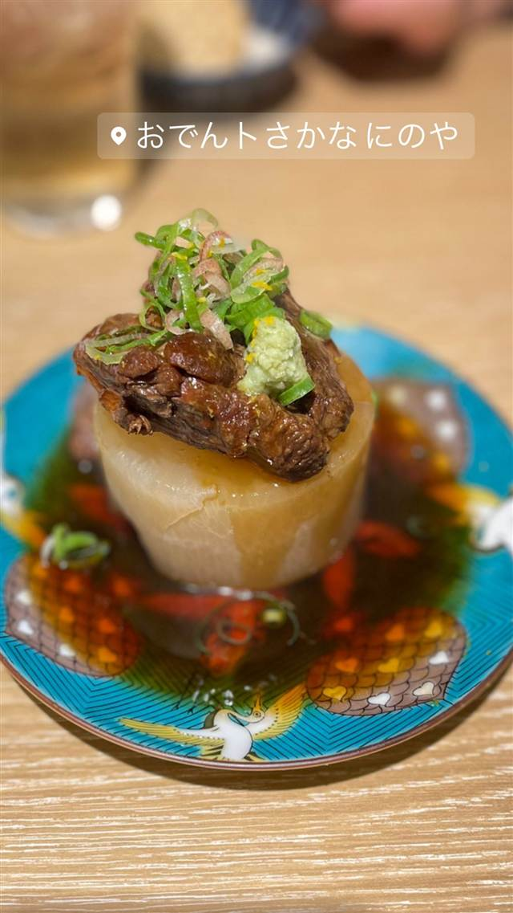

おでんトさかな にのや
牛タン大根やフォアグラ大根など個性派の創作おでん
おでんトさかなにのや
新宿西口駅から徒歩1分、和食居酒屋「こだわりもん一家」が手がける新業態のおでん酒場。料理長自らが店主を務め、焼きあご出汁のおでんと新鮮な魚介、日本酒を気軽に楽しめる。人気を受けて有楽町店や姉妹店「にのや はなれ」も生まれた。
TRIVIA
豆知識
- 店主は「こだわりもん一家」グループの料理長が兼任している
- 人気を受けて2024年11月に姉妹店「にのや はなれ」がオープンした
REVIEWS
世間の評判
3.56食べログ
出汁の染みたおでんと刺身盛り
- 出汁がしっかり染みたおでんや牛すじ大根の美味しさを評価する声が多い
- リーズナブルな価格で日本酒も安く普段使いしやすいという声が多い
- 立ち飲みもじっくり飲むのも可能で会社の飲み会やデートにも使えるという声がある
- 満席で混雑しやすく忙しい時は店員が捕まりにくいと感じる声もある
食べログ 口コミ686件
| 系譜 | 和食居酒屋チェーン「こだわりもん一家」が展開する新業態「にのや」ブランドの1号店。姉妹店に有楽町の「寿司トおでん にのや」、2024年11月8日オープンの「寿司ト焼きもん にのや はなれ」がある。 |
|---|---|
| 看板 | 地蛤や牛タン大根、フォアグラ大根、カマンベールチーズなど個性的な創作おでん。 |
| こだわり | 焼きあご出汁を使ったおでんに、鮮魚などを手作りにこだわって提供。 |
| どこから | 都心 |
| 営業時間 | 月〜金 16:00-23:00 土・日 15:00-23:00 |
| 予算 | 夜 ¥3,000～¥3,999 |
| 予約 | 予約可 |
| 場所 | 新宿西口 東京都新宿区西新宿1-4-8 1F |
| メモ | 新宿西口駅D2出口から徒歩約1分。立ち飲みスタイルのカウンターと奥にテーブル席がある。 |
食べたもの：おでん大根
OFFICIAL
店からの知らせ
その日の限定や臨時の休みは、店のInstagramに出ます。
NEARBY
近い店・同じ系統の店
-
 かき氷 西武新宿駅
氷おばけ
歌舞伎町の居酒屋を間借り、メレンゲの「おばけ」がのるかき氷
昼 ¥1,000～¥1,999 夜 ¥1,000～¥1,999
かき氷 西武新宿駅
氷おばけ
歌舞伎町の居酒屋を間借り、メレンゲの「おばけ」がのるかき氷
昼 ¥1,000～¥1,999 夜 ¥1,000～¥1,999
-
 パンケーキ・フレンチトースト 新宿
Mr.waffle ルミネ新宿店
ベルギーで3か月に500個食べ歩いた末生まれたリエージュワッフル
昼 ～¥999 夜 ～¥999
パンケーキ・フレンチトースト 新宿
Mr.waffle ルミネ新宿店
ベルギーで3か月に500個食べ歩いた末生まれたリエージュワッフル
昼 ～¥999 夜 ～¥999
-
 うどん・ほうとう 新宿駅(南口)
うどん 慎
一晩寝かせ強いコシを出す、注文後に打つ明太釜玉うどん
昼 ¥1,000～¥1,999 夜 ¥1,000～¥1,999
うどん・ほうとう 新宿駅(南口)
うどん 慎
一晩寝かせ強いコシを出す、注文後に打つ明太釜玉うどん
昼 ¥1,000～¥1,999 夜 ¥1,000～¥1,999
-
 まぜそば・油そば 西武新宿駅
BUTAKIN 新宿歌舞伎町店
煮豚をほぐしたほぐし豚にフライドオニオンをのせた油そば
昼 ¥1,000～¥1,999 夜 ¥1,000～¥1,999
まぜそば・油そば 西武新宿駅
BUTAKIN 新宿歌舞伎町店
煮豚をほぐしたほぐし豚にフライドオニオンをのせた油そば
昼 ¥1,000～¥1,999 夜 ¥1,000～¥1,999
-
 二郎系(直系) 西武新宿駅
ラーメン二郎 新宿歌舞伎町店
看板の書き間違いから「二郎」に、深夜2時半まで営業する直系店
昼 ～¥999 夜 ～¥999
二郎系(直系) 西武新宿駅
ラーメン二郎 新宿歌舞伎町店
看板の書き間違いから「二郎」に、深夜2時半まで営業する直系店
昼 ～¥999 夜 ～¥999
-
 シーフード（洋） 新宿
DANCING CRAB Tokyo
フォークを使わず手づかみで食べるケイジャン風シーフード
夜 ¥6,000～¥7,999
シーフード（洋） 新宿
DANCING CRAB Tokyo
フォークを使わず手づかみで食べるケイジャン風シーフード
夜 ¥6,000～¥7,999
ONSEN & SAUNA